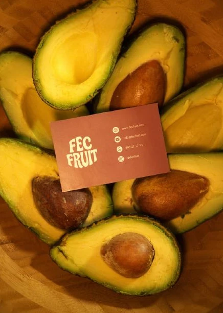
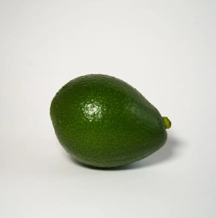
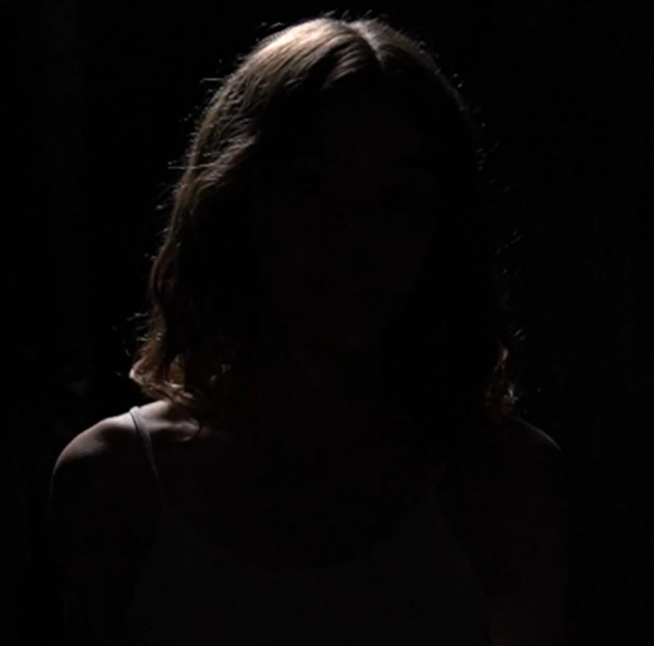
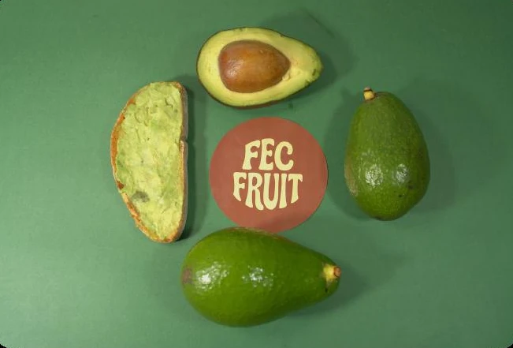
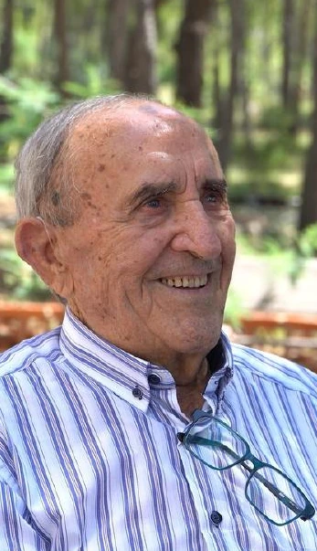
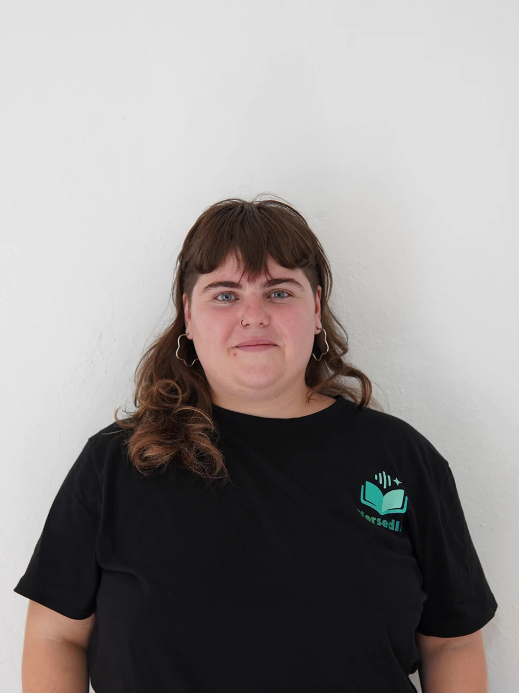

FOTOGRAFÍA DE MARCAVídeo, fotografía y contenido.
Una mirada propia en cada proyecto.

01 / AUDIOVISUAL↗Cada imagen,
02 / FOTOGRAFÍA↗FECFRUIT
03 / CONTENIDO↗VersediaUna selección de fotografía de marca, contenido para redes y proyectos audiovisuales.
Contar historias con imágenes.
Encontrar el ritmo en el montaje.
Dar forma a lo que quieres comunicar.

Creativa, versátil y resolutiva. Me interesa lo que una imagen puede contar y todo lo que el montaje puede hacer sentir.
Soy graduada en Comunicación Audiovisual y trabajo con vídeo, fotografía, edición y creación de contenido para plataformas digitales.
Durante mis prácticas en Grabalo en la memoria participé en proyectos reales para clientes y en campañas de comunicación, utilizando Adobe Photoshop, Adobe Premiere Pro, Webflow y Trello.
Prácticas · creación de contenido audiovisual
Creación de contenido audiovisual
Fotografía y contenido visual
Contenido audiovisual · jurado joven
Una idea, una marca, una historia.
Cuéntame qué tienes en mente.